smalltalkexample01Markers <script: 'self new example01Markers open'> | x p | x := -3.14 to: 3.14 by: 0.01. p := RSLinePlot new. p x: x y: x sin * 0.22 + 0.5. p addDecoration: RSYMarkerDecoration new average. p addDecoration: RSYMarkerDecoration new min. p addDecoration: RSYMarkerDecoration new max. p addDecoration: RSXMarkerDecoration new max. p addDecoration: RSXMarkerDecoration new min. p addDecoration: (RSXMarkerDecoration new value: 0). p verticalTick asFloat. ^ p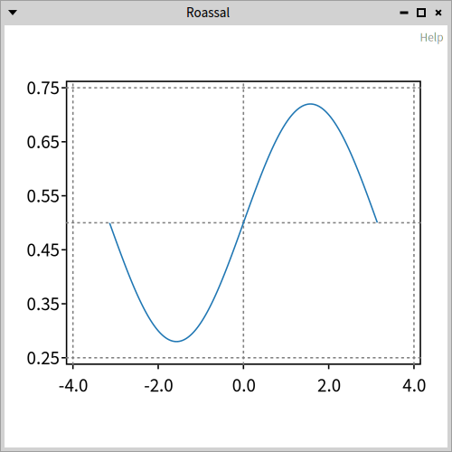
#example02ScatterPlotsmalltalkexample02ScatterPlot <script: 'self new example02ScatterPlot show'> | classes p | classes := Collection withAllSubclasses. p := RSScatterPlot new x: (classes collect: #numberOfMethods) y: (classes collect: #linesOfCode). p xlabel: 'X Axis'. p ylabel: 'Y Axis'. p title: 'Hello World'. ^ p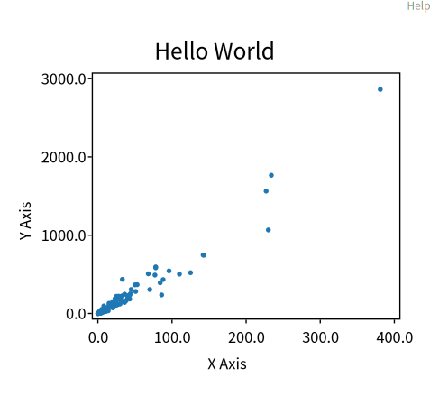
#example03Plotsmalltalkexample03Plot <script: 'self new example03Plot show'> | plt p x | x := 0.0 to: 2 count: 100. plt := RSCompositeChart new. p := RSLinePlot new x: x y: (x raisedTo: 2). plt add: p. p := RSLinePlot new x: x y: (x raisedTo: 3). plt add: p. p := RSLinePlot new x: x y: (x raisedTo: 4). plt add: p. plt xlabel: 'X Axis'. plt ylabel: 'Y Axis'. plt title: 'Hello World'. ^ plt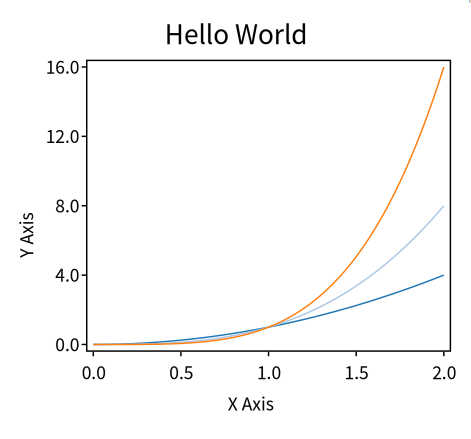
#example04WithTicksmalltalkexample04WithTick <script: 'self new example04WithTick show'> | x chart | x := -10.0 to: 20.0 count: 100. chart := RSCompositeChart new add: (RSScatterPlot new x: x y: (x raisedTo: 3)); add: (RSLinePlot new x: x y: (x raisedTo: 2)); yourself. chart horizontalTick integer. chart verticalTick integer. ^ chart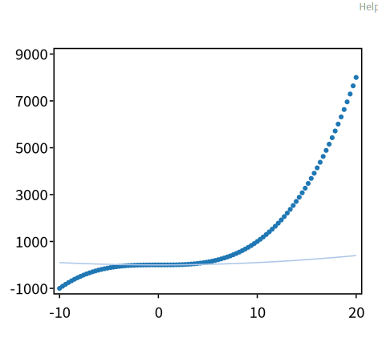
#example05WithTicksmalltalkexample05WithTick <script: 'self new example05WithTick show'> | x c | x := 0.0 to: 14 count: 100. c := RSCompositeChart new. 1 to: 7 do: [ :i | c add: (RSLinePlot new x: x y: (i * 0.3 + x) sin * (7 - i)) ]. c verticalTick integer. c horizontalTick integer. ^ c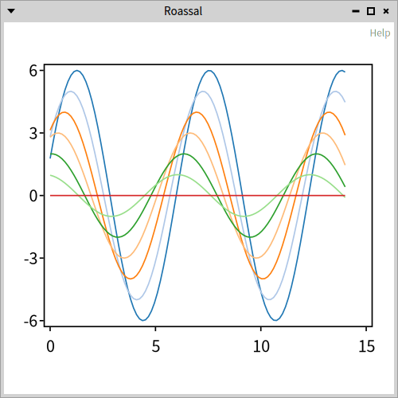
#example06CustomNumberOfTickssmalltalkexample06CustomNumberOfTicks <script: 'self new example06CustomNumberOfTicks show'> | x chart | x := -10.0 to: 20.0 count: 100. chart := RSCompositeChart new add: (RSScatterPlot new x: x y: (x raisedTo: 3)); add: (RSLinePlot new x: x y: (x raisedTo: 2)); yourself. chart horizontalTick numberOfTicks: 20; integer. chart verticalTick integer numberOfTicks: 2; doNotUseNiceLabel. ^ chart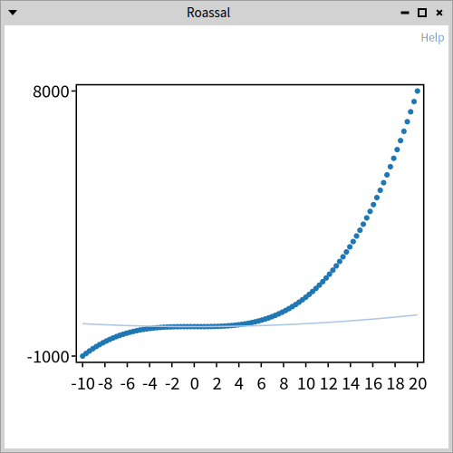
#example07AdjustingFontSizesmalltalkexample07AdjustingFontSize <script: 'self new example07AdjustingFontSize open'> | x y c | x := -3.14 to: 3.14 by: 0.1. y := x sin. c := RSLinePlot new x: x y: y. c addDecoration: (RSChartTitleDecoration new title: 'hello'; fontSize: 40). c addDecoration: (RSXLabelDecoration new title: 'My X Axis'; fontSize: 12). c addDecoration: (RSYLabelDecoration new title: 'My Y Axis'; fontSize: 15; horizontal). ^ c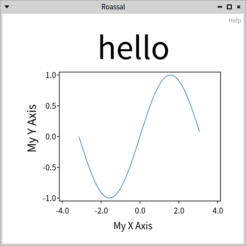
#example08TwoChartssmalltalkexample08TwoCharts <script: 'self new example08TwoCharts open'> | c c1 c2 | c := RSCanvas new. c1 := RSCompositeChart new. c1 add: (RSLinePlot new x: (1 to: 10) y: (1 to: 10) sqrt). c1 title: 'squared root'. c1 xlabel: 'X'. c1 ylabel: 'Y'. c2 := RSCompositeChart new. c2 add: (RSLinePlot new x: (1 to: 10) y: (1 to: 10) squared). c2 title: '^ 2'. c2 xlabel: 'X'. c2 ylabel: 'Y'. c add: c1 asShape; add: c2 asShape. RSHorizontalLineLayout on: c shapes. c @ RSCanvasController. ^ c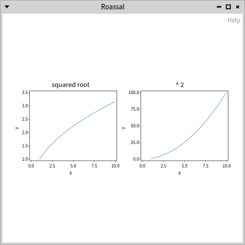
#example09LinearSqrtSymlogsmalltalkexample09LinearSqrtSymlog <script: 'self new example09LinearSqrtSymlog open'> | c x y | c := RSCanvas new @ RSCanvasController. x := (-5 to: 500 by: 0.1). y := x. c addAll: (#(yLinear ySqrt yLog) collect: [ :sel | | chart | chart := RSCompositeChart new. chart add: (RSLinePlot new x: x y: y). chart verticalTick asFloat. chart removeHorizontalTicks. chart perform: sel. chart title: sel. chart asShape ]). RSHorizontalLineLayout on: c shapes. ^ c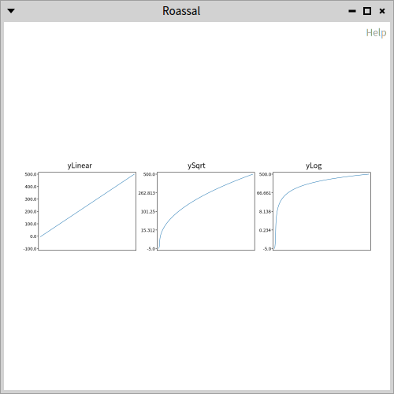
#example10BarPlotsmalltalkexample10BarPlot <script: 'self new example10BarPlot open'> | p x y | x := 0.0 to: 2 count: 10. y := (x raisedTo: 2) - 2. p := RSBarPlot new x: x y: y. p horizontalTick doNotUseNiceLabel; numberOfTicks: x size - 1; asFloat. p xlabel: 'X Axis'. p verticalTick numberOfTicks: 10; asFloat. p ylabel: 'Y Axis'. p title: 'Histogram'. ^ p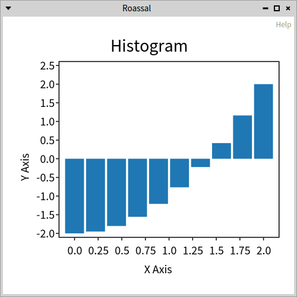
#example11BarplotCombinedWithLinesmalltalkexample11BarplotCombinedWithLine <script: 'self new example11BarplotCombinedWithLine open'> | c x y | x := 0.0 to: 2 count: 10. y := (x raisedTo: 2) - 2. c := RSCompositeChart new. c add: (RSBarPlot new x: x y: y). c add: (RSLinePlot new x: x y: y; color: Color red). c horizontalTick asFloat. c verticalTick numberOfTicks: 10; asFloat. c xlabel: 'X Axis'. c ylabel: 'Y Axis'. c title: 'Bar char'. ^ c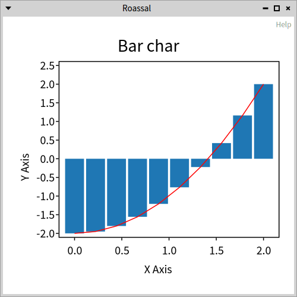
#example12ScatterPlotAndNormalizersmalltalkexample12ScatterPlotAndNormalizer <script: 'self new example12ScatterPlotAndNormalizer open'> | x y z r p | x := OrderedCollection new. y := OrderedCollection new. z := OrderedCollection new. r := Random seed: 42. 1 to: 100 do: [ :i | x add: i + (r next * 10 + 1) asInteger. y add: i + (r next * 10 + 1) asInteger. z add: i + (r next * 10 + 1) asInteger. ]. p := RSScatterPlot new x: x y: y. p color: Color blue translucent. p horizontalTick doNotUseNiceLabel asFloat: 3. p build. p ellipses models: z. RSNormalizer size shapes: p ellipses; from: 2; to: 10; normalize: #yourself. RSNormalizer color shapes: p ellipses; normalize: #yourself. p ellipses translucent. ^ p canvas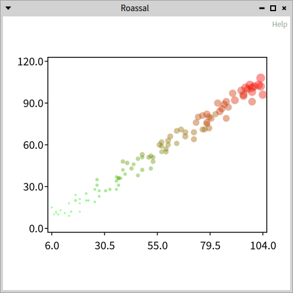
#example13AreaPlotsmalltalkexample13AreaPlot <script: 'self new example13AreaPlot open'> | x y1 y2 p canvas charts | x := 0 to: 2 by: 0.01. y1 := (2 * Float pi * x) sin. y2 := 1.2 * (4 * Float pi * x) sin. canvas := RSCanvas new. charts := {'Between y1 and 0'-> (y1 -> 0). 'Between y2 and 1'-> (y1 -> 1). 'Between y1 and y2'-> (y1 -> y2)} collect: [ :assoc | p := RSAreaPlot new x: x y1: assoc value key y2: assoc value value. p extent: 500@100. p horizontalTick numberOfTicks: 10; asFloat. p verticalTick numberOfTicks: 3; asFloat. p ylabel: assoc key. p asShape ]. RSVerticalLineLayout on: charts. canvas addAll: charts. canvas @ RSCanvasController. ^ canvas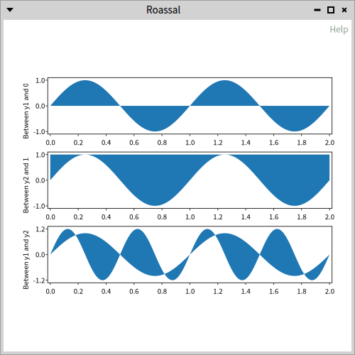
#example14AreaPlotWithErrorsmalltalkexample14AreaPlotWithError <script: 'self new example14AreaPlotWithError open'> | x y polyfit res y_est y_err c scatter | x := 0 to: 10. y := #(3.9 4.4 10.8 10.3 11.2 13.1 14.1 9.9 13.9 15.1 12.5). polyfit := [ :x1 :y1 :n | "TODO" "Need a real polyfit implementation for any n" "maybe not in Roassal maybe in polymath" "https://en.wikipedia.org/wiki/Curve_fitting" 0.9-> 6]. res := polyfit value: x value: y value: 1. y_est := res key * x + res value. y_err := x stdev * ( (1/x size) + (( (x - x average) raisedTo: 2) / ((x - x average) raisedTo: 2) sum) ) sqrt. c := RSCompositeChart new. c padding: 10@10. c add: (RSAreaPlot new x: x y1: y_est + y_err y2: y_est - y_err; color: (Color blue alpha: 0.1) ). c add: (RSLinePlot new x: x y: y_est; color: Color red). c add: (scatter := RSScatterPlot new x: x y: y). scatter color: Color red. c horizontalTick numberOfTicks: 10; asFloat. c verticalTick numberOfTicks: 3; asFloat. ^ c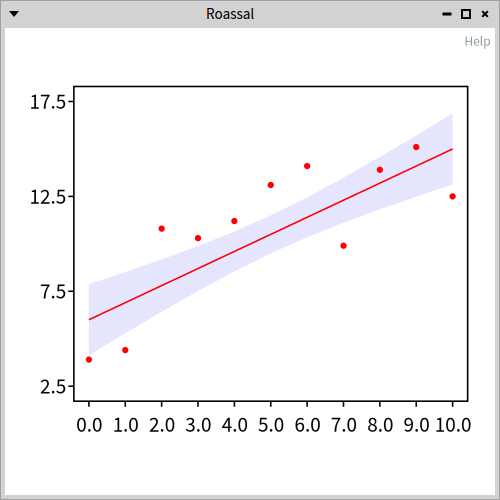
#example15AreaBoxsmalltalkexample15AreaBox <script: 'self new example15AreaBox open'> | x y1 y2 c | x := #(0 1 2 3). y1 := #(0.8 0.8 0.2 0.2). y2 := #(0 0 1 1). c := RSCompositeChart new. c extent: 150@50. c add: (RSAreaPlot new x: x y1: y1 y2: y2). c add: (RSLinePlot new x: x y: y1; color: Color red; format: 's--'). c add: (RSLinePlot new x: x y: y2; color: Color orange; format: 'o--'). c horizontalTick numberOfTicks: 7; asFloat. c verticalTick asFloat. ^ c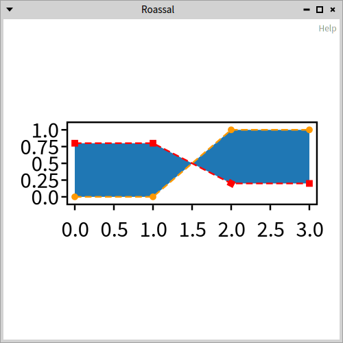
#example16Seriessmalltalkexample16Series <script: 'self new example16Series open'> | x cumsum c b y error | x := 1 to: 100. cumsum := [:arr | | sum | sum := 0. arr collect: [ :v | sum := sum + v. sum ] ]. c := RSCompositeChart new. c extent: 400@400. b := RSLegend new. b container: c canvas. b layout horizontal gapSize: 30. #( series1 red series2 blue) pairsDo: [ :label :color | y := (x collect: [ :i | 50 atRandom - 25 ]). y := cumsum value: y. error := x. c add: (RSAreaPlot new x: x y1: y + error y2: y - error; color: (color value: Color) translucent). c add: (RSLinePlot new x: x y: y; format: 'o'; color: (color value: Color)). b text: label withBoxColor: (color value: Color) ]. c build. b build. ^ c canvas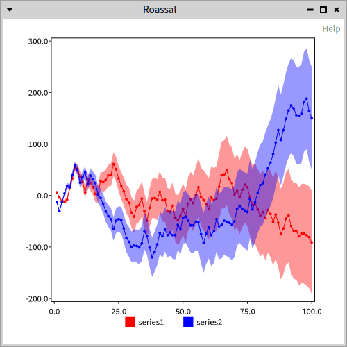
#example17CLPvsUSDsmalltalkexample17CLPvsUSD <script: 'self new example17CLPvsUSD open'> | dates y data x c plot paint horizontal | dates := OrderedCollection new. y := OrderedCollection new. data := {'04-jun-2020'. 769.13. '03-jun-2020'. 782.86. '02-jun-2020'. 796.46. '01-jun-2020'. 806.32. '29-may-2020'. 812.74. '28-may-2020'. 816.47. '27-may-2020'. 802.10. '26-may-2020'. 803.74. '25-may-2020'. 805.75. '22-may-2020'. 806.17. '20-may-2020'. 819.08. '19-may-2020'. 820.65. '18-may-2020'. 823.86. '15-may-2020'. 822.93. '14-may-2020'. 820.38. '13-may-2020'. 821.88. '12-may-2020'. 826.05. '11-may-2020'. 827.65. '08-may-2020'. 836.27. '07-may-2020'. 839.08. '06-may-2020'. 832.84. '05-may-2020'. 838.74. '04-may-2020'. 837.92} reverse. data pairsDo: [ :f :d | dates add: d. y add: f ]. x := 1 to: dates size. c := RSCompositeChart new. c extent: 300@200. plot := RSAreaPlot new x: x y1: y y2: 750. paint := LinearGradientPaint fromArray: {0-> (Color green alpha: 0.3). 0.8 -> Color transparent}. paint start: 0@ -100; stop: 0@ 100. plot shape paint: paint. c add: plot. plot := RSLinePlot new x: x y: y. plot color: Color green muchDarker. plot width: 2. plot joinRound. plot markerEnd: (RSEllipse new size: 10). c add: plot. horizontal := c horizontalTick fromNames: dates. horizontal configuration fontSize: 4. horizontal useDiagonalLabel. c verticalTick numberOfTicks: 10; asFloat. c title: 'CLP vs USD'. ^ c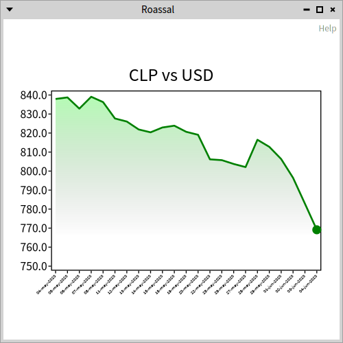
#example18Animationsmalltalkexample18Animation <script: 'self new example18Animation inspect'> | c canvas line points current lineAnimation area paint afterline yticks xticks | c := self example17CLPvsUSD. c build. canvas := c canvas. "line" line := canvas shapes detect: [ :s | s class = RSPolyline ]. points := line controlPoints. current := OrderedCollection new. current add: points first; add: points second. line controlPoints: current. lineAnimation := (2 to: points size) collect: [ :i | canvas transitionAnimation duration: 100 milliSeconds; from: (points at: i - 1); to: (points at: i); onStepDo: [ :t | current removeLast; add: t. line controlPoints: current ]; when: RSAnimationEndEvent do: [ current add: (points at: i) ] for: self ] as: OrderedCollection. "area" area := canvas shapes detect: [ :s | s class = RSSVGPath ]. paint := area paint. area noPaint. afterline := canvas parallelAnimation. afterline add: (canvas transitionAnimation onStepDo: [ :t | area paint: (Color transparent interpolateTo: paint at: t) ]). lineAnimation add: afterline. canvas animationFrom: lineAnimation. "ticks" yticks := canvas shapes select: [ :s | s class = RSLabel ]. yticks do: [ :s | s bold ]. yticks := yticks groupedBy: [ :s | s matrix sy ]. xticks := yticks values first. yticks := yticks values second. xticks doWithIndex: [ :s :index | canvas newAnimation delay: (index - 1 * 100) milliSeconds; duration: 200 milliSeconds; from: Color transparent; to: s color; on: s set: #color:. s color: Color transparent ]. yticks doWithIndex: [ :s :index | s noPaint. afterline add: (canvas transitionAnimation delay: (index * 300) milliSeconds; duration: 2 second; easing: RSEasingInterpolator elasticOut; from: -100 @ s position y; to: s position; onStepDo: [ :p | s color: Color black. s position: p ]) ]. ^ canvas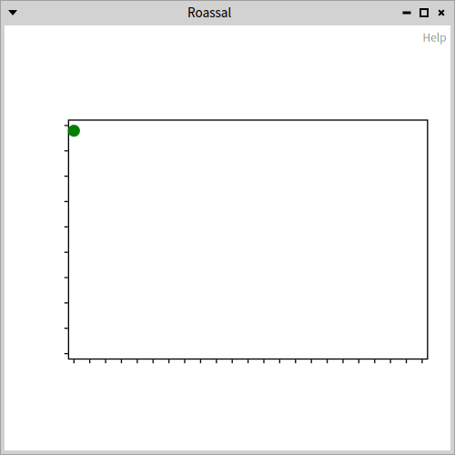
#example19PositiveNetagiveBarPlotssmalltalkexample19PositiveNetagiveBarPlots <script: 'self new example19PositiveNetagiveBarPlots open'> | c d d2 | c := RSCompositeChart new. d := RSBarPlot new. d color: Color green darker darker darker translucent. d y: #(4 10 5 9). c add: d. d2 := RSBarPlot new. d2 color: Color red darker darker darker translucent. d2 y: #(-5 -6 -3 -3). c add: d2. c verticalTick integer. c addDecoration: (RSYLabelDecoration new title: 'Difference'; rotationAngle: -90; offset: -25 @ 0). c addDecoration: (RSXLabelDecoration new title: 'Evolution'). ^ c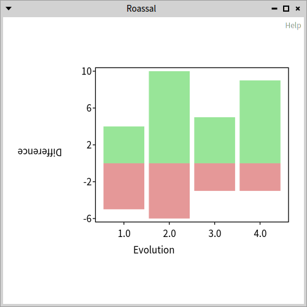
#example20Gridsmalltalkexample20Grid <script: 'self new example20Grid open'> | c x y vertical horizontal | x := 0 to: 10. y := x raisedTo: 2. c := RSAbstractChart lineX: x y: y. vertical := c verticalTick. vertical shape dashed. vertical configuration tickSize: c extent x negated. horizontal := c horizontalTick. horizontal configuration tickSize: c extent y negated. c build. ^ c canvas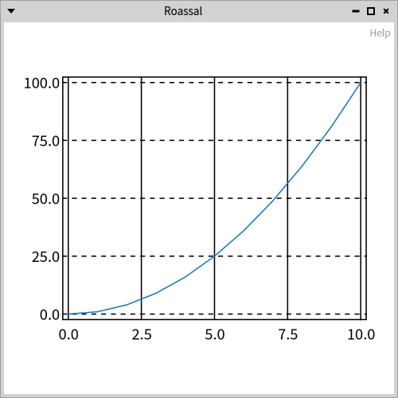
#example21Popupsmalltalkexample21Popup <script: 'self new example21Popup open'> | x cumsum c y error popup | x := 1 to: 100. cumsum := [:arr | | sum | sum := 0. arr collect: [ :v | sum := sum + v. sum ] ]. c := RSCompositeChart new. c extent: 800@400. popup := RSPopupDecoration new. c addDecoration: popup. #( series1 red series2 blue) pairsDo: [ :label :color | | col plot | y := (x collect: [ :i | 50 atRandom - 25 ]). y := cumsum value: y. error := x. col := color value: Color. c add: (RSAreaPlot new x: x y1: y + error y2: y - error; color: col translucent). c add: (plot := RSLinePlot new x: x y: y; format: 'o'; color: col; yourself). popup chartPopupBuilder for: plot text: label color: col. ]. c build. ^ c canvas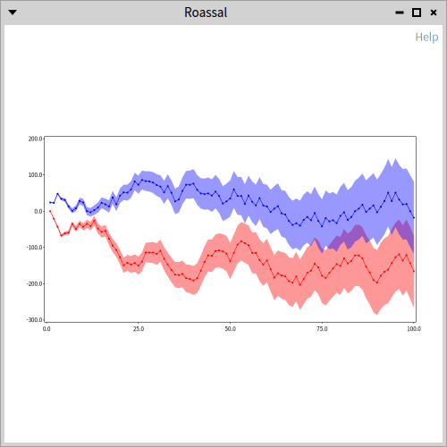
#example22CustomPopupsmalltalkexample22CustomPopup <script: 'self new example22CustomPopup open'> | values names x y popup c value date group | values := { '25-nov-2020' -> 772.83. '24-nov-2020' -> 765.96. '23-nov-2020' -> 761.55. '20-nov-2020' -> 758.62. '19-nov-2020' -> 758.10. '18-nov-2020' -> 767.05. '17-nov-2020' -> 767.86. '16-nov-2020' -> 766.70. '13-nov-2020' -> 757.43. '12-nov-2020' -> 757.42. '11-nov-2020' -> 760.90. '10-nov-2020' -> 753.75. '09-nov-2020' -> 759.25. '06-nov-2020' -> 752.01. '05-nov-2020' -> 757.16. '04-nov-2020' -> 758.53. '03-nov-2020' -> 769.17. '02-nov-2020' -> 771.92. '30-oct-2020' -> 770.45. '29-oct-2020' -> 775.56. '28-oct-2020' -> 772.05. '27-oct-2020' -> 779.57. '26-oct-2020' -> 777.72. '23-oct-2020' -> 781.41. '22-oct-2020' -> 784.07. '21-oct-2020' -> 786.66. '20-oct-2020' -> 788.27. '19-oct-2020' -> 795.68. '16-oct-2020' -> 801.91. '15-oct-2020' -> 798.56. '14-oct-2020' -> 797.66. '13-oct-2020' -> 796.05. '09-oct-2020' -> 797.25. '08-oct-2020' -> 795.05. '07-oct-2020' -> 797.35. } reversed. names := values collect: #key. x := 1 to: values size. y := values collect: #value. popup := RSPopupDecoration new. c := RSCompositeChart new. c extent: 400 @ 150. c add: (RSAreaPlot new x: x y1: y y2: 750; color: ((LinearGradientPaint fromArray: { (0 -> Color green translucent). (0.75 -> Color transparent) }) start: 0 @ -100; stop: 0 @ 100; yourself)). c add: ((RSAbstractChart lineX: x y: y) color: Color gray). c horizontalTick fromNames: names; useDiagonalLabel. c addDecoration: popup. popup chartPopupBuilder: (RSBlockChartPopupBuilder new rowShapeBlock: [ :plot :point | value := RSLabel new text: point y; bold. date := RSLabel new text: (names at: point x). group := { value. date }. RSHorizontalLineLayout on: group. group asShape ]). ^ c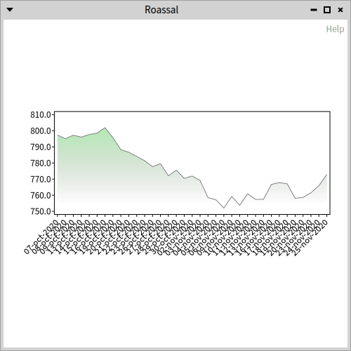
#example23PopupInScatterPlotsmalltalkexample23PopupInScatterPlot <script: 'self new example23PopupInScatterPlot open'> | chart plot data classes | chart := RSCompositeChart new. classes := Collection withAllSubclasses. data := classes collect: [:cls | cls linesOfCode sqrt ]. plot := RSScatterPlot new y: data. chart add: plot. chart padding: 10. chart build. plot ellipses with: classes do: [ :e :cls | e model: cls ]. plot ellipses @ (RSPopup themeText: [:model | model name, String cr, 'LOC: ', model linesOfCode asString]). ^ chart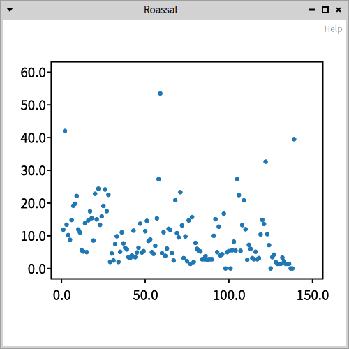
#example24SpineLinesmalltalkexample24SpineLine <script: 'self new example24SpineLine open'> | x c y spine | x := -3.14 to: 3.14 by: 0.01. y := x sin * 0.22 + 0.2. c := RSAbstractChart lineX: x y: y. c extent: 400 @ 300. c spineDecoration: (spine := RSLineSpineDecoration new). spine shape format: '^'. c padding: 10. ^ c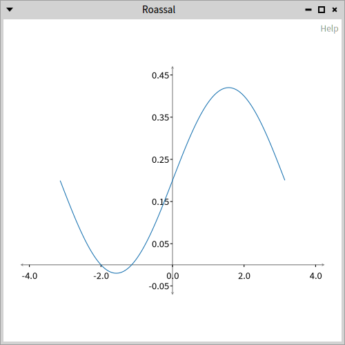
#example25CustomBackgroundsmalltalkexample25CustomBackground <script: 'self new example25CustomBackground open'> | plot c scale color form paint | plot := self example10BarPlot. c := RSCanvas new. scale := NSScale linear domain: { 1. 25 }; range: { 10. 3 }. color := (Color colorFrom: '#20325a') alpha: 0.2. 1 to: 25 do: [ :y | 1 to: 50 do: [ :x | | e | e := RSEllipse new. e position: x @ y * 10. e size: (scale scale: y). e color: color. c add: e ] ]. c zoomToFit. form := c asForm. paint := AthensCairoPatternSurfacePaint createForSurface: (AthensCairoSurface fromForm: form). paint origin: (form extent / 2) negated. plot spineDecoration masterShape paint: paint. ^ plot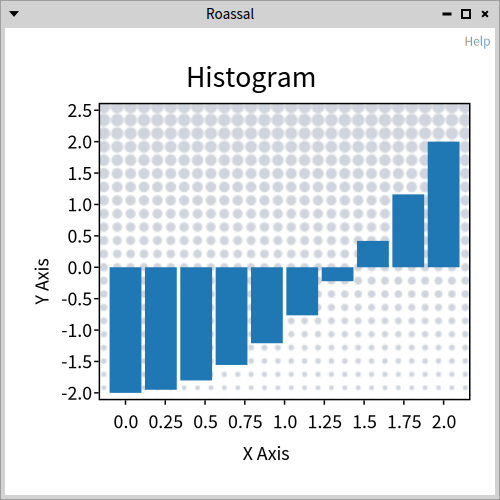
#example26DensityPlotsmalltalkexample26DensityPlot <script: 'self new example26DensityPlot open'> | prod data paint densityPlot points linePlot plot | prod := [:a | Array new: a value withAll: a key ]. data :=(prod value: 1.5->7), (prod value: 2.5->2), (prod value: 3.5->8), (prod value: 4.5->3), (prod value: 5.5->1), (prod value: 6.5->10). paint := LinearGradientPaint fromArray: { 0-> '#050321'. 1-> '#435562'}. paint start: 25@ 50; stop: 0@ -50. densityPlot := RSDensityPlot data: data. densityPlot masterShape paint: paint. densityPlot bandwidth: 0.5. points := densityPlot curvePoints. linePlot := RSLinePlot points: points. linePlot color: Color red. plot := densityPlot + linePlot. plot container background: (Color colorFrom: '#050321'). (plot title: 'se multiplient' asUppercase) masterShape bold; fontFamily: 'Impact'; fontSize: 20. (plot title: 'Les opportunités' asUppercase) masterShape fontFamily: 'Avenir Next'. plot styler: (RSChartStyler new tickColor: Color white; spineColor: Color white; textColor: Color white). plot container newAnimation repeat; from: 0; to: 1000; onStepDo: [ :t | linePlot line dashArray: { t. 1000 }. ]; when: RSAnimationStartEvent do: [:evt | linePlot line color: (linePlot line color = Color red ifTrue: [Color green] ifFalse: [Color red]) ] for: plot. ^ plot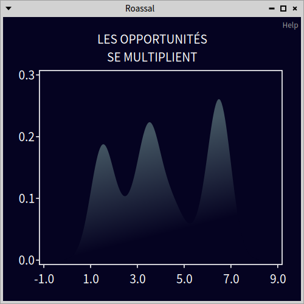